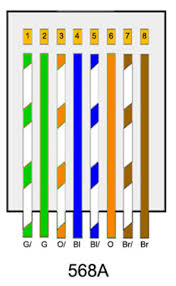

Entrar
NORMA 568-A
regresar
¿QUÉ ES LA NORMA 568-A?
Es un sistema de cableado de telecomunicaciones genérico especialmente usados para edificios comerciales que soportan un ambiente multiproducto y multifabricante. También proporciona directivas para el diseño de productos de telecomunicaciones para empresas comerciales
Es un sistema de cableado de telecomunicaciones genérico especialmente usados para edificios comerciales que soportan un ambiente multiproducto y multifabricante. También proporciona directivas para el diseño de productos de telecomunicaciones para empresas comerciales
CONFIGURACION DE COLORES DE LA NORMA
CONFIGURACION DE COLORES DE LA NORMA
|
 |
La configuracion es como se muestra en la imagen y se describe aqui -Blanco-Verde -Verde -Blanco Naranja -Azul -Naranja .-Blanco Marron -Marron
|
A CONTINUACION LOS PASOS PARA EL ARMADO DE CABLE ETHERNET CON LA NORMA 568-A
Materiales: • Cable tipo VGA 
|
Pasos 1 • Cortar el cable a la medida que se necesite 
|
Pasos 2 • Pelar el cable, cortar un segmento del cable de 2 a 3 cm con ayuda del pelacables . 
|
Pasos 3 3.-Destrenzar el cable, destrenzaremos cada uno de los pares con el fin de alizarlos lo mas posible .
|
Pasos 4 • Ordenar los hilo enseguida ordenaremos los hilos de acuerdo a la norma 568-A el orden que seguiremos es el siguiente: |
Pasos 5 • Con ayuda de las pinzas ponchadoras cortaremos el cable para que todas queden derechas como se muestra a continuación 
|
Pasos 6 • Identificar los pines del conector RJ45 de izquierda a derecha, con los pines en la parte superior mirando hacía a ti 
|
Pasos 7 •Introducir los hilos al conector posteriormente lo introduciremos al conector RJ45, verificando qué lleguen al extremo del conector al igual que el recubrimiento

|
Pasos 8 • Tomar las pinzas ponchadoras e introducir el conector, así mismo presionar las pinzas hasta qué se escuche un chasquido

|
Pasos 9 •Repite todos los pasos anteriores en el otro extremo del cable tomando en cuenta qué seguiremos la misma norma de cableado

|
Pasos 10 • Por último, con la ayuda de un tester debes comprobar en ambos extremos del cable qué funcionen correctamente 
|
Pasos 11
• Si ambos cables siguen la numeración en orden se puede decir qué ya está listo el cable

|